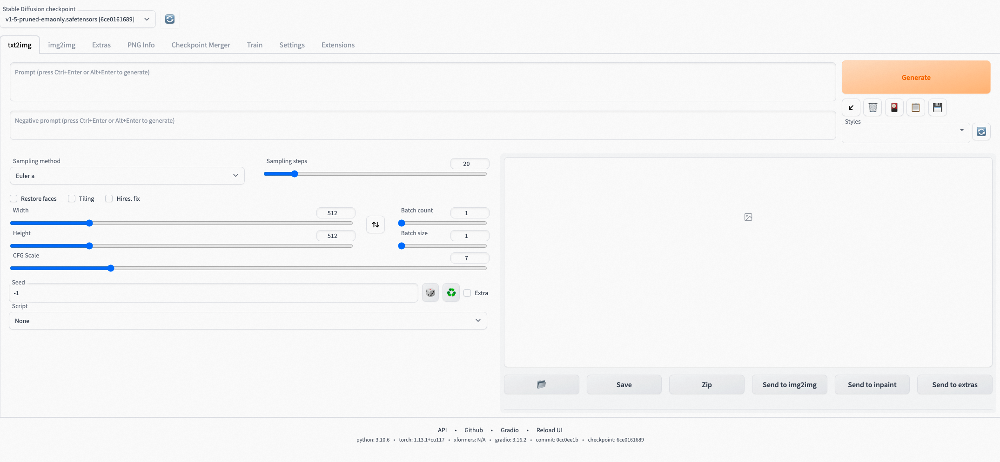
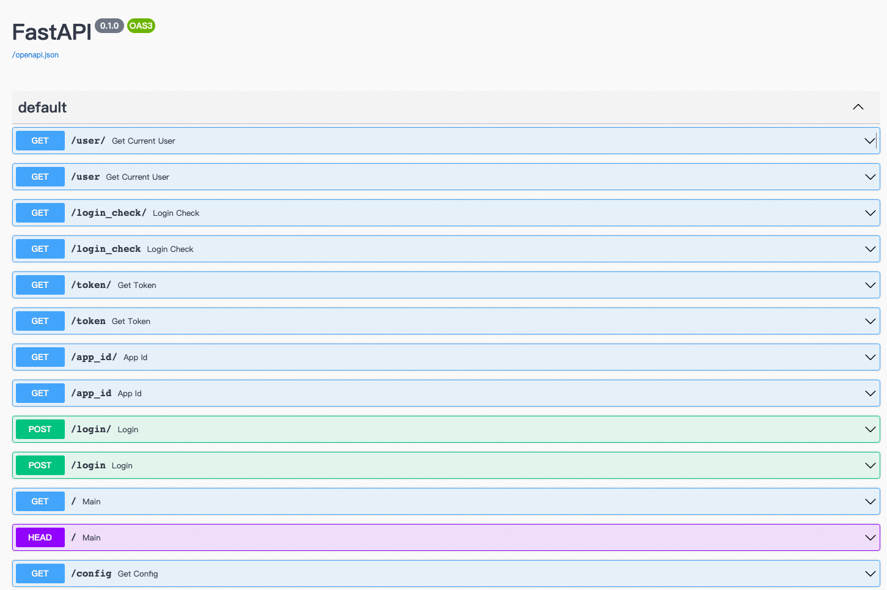

stable-diffusion服务实例部署文档
免责声明：本服务由第三方提供，我们尽力确保其安全性、准确性和可靠性，但无法保证其完全免于故障、中断、错误或攻击。因此，本公司在此声明：对于本服务的内容、准确性、完整性、可靠性、适用性以及及时性不作任何陈述、保证或承诺，不对您使用本服务所产生的任何直接或间接的损失或损害承担任何责任；对于您通过本服务访问的第三方网站、应用程序、产品和服务，不对其内容、准确性、完整性、可靠性、适用性以及及时性承担任何责任，您应自行承担使用后果产生的风险和责任；对于因您使用本服务而产生的任何损失、损害，包括但不限于直接损失、间接损失、利润损失、商誉损失、数据损失或其他经济损失，不承担任何责任，即使本公司事先已被告知可能存在此类损失或损害的可能性；我们保留不时修改本声明的权利，因此请您在使用本服务前定期检查本声明。如果您对本声明或本服务存在任何问题或疑问，请联系我们。
概述
Stable Diffusion Web UI 是一个基于 Stable Diffusion 的基础应用，利用 gradio 模块搭建出交互程序，可以在低代码 GUI 中立即访问 Stable Diffusion。它支持文字生成图片，图片转图片，使用各种各样的模型来达到你想要的效果，还能训练自己的专属模型。本文向您介绍如何开通计算巢上的stable-diffusion服务，以及部署流程和使用说明。
计费说明
stable-diffusion在计算巢上的费用主要涉及：
- 所选vCPU与内存规格
- 磁盘容量
- 公网带宽
计费方式包括：
- 按量付费（小时）
- 包年包月
预估费用在创建实例时可实时看到。
部署架构
stable-diffusion服务单机部署架构。
RAM账号所需权限
stable-diffusion服务需要对ECS、VPC等资源进行访问和创建操作，若您使用RAM用户创建服务实例，需要在创建服务实例前，对使用的RAM用户的账号添加相应资源的权限。添加RAM权限的详细操作，请参见为RAM用户授权。所需权限如下表所示。
| 权限策略名称 | 备注 |
|---|---|
| AliyunECSFullAccess | 管理云服务器服务（ECS）的权限 |
| AliyunVPCFullAccess | 管理专有网络（VPC）的权限 |
| AliyunROSFullAccess | 管理资源编排服务（ROS）的权限 |
| AliyunComputeNestUserFullAccess | 管理计算巢服务（ComputeNest）的用户侧权限 |
| AliyunCloudMonitorFullAccess | 管理云监控（CloudMonitor）的权限 |
部署流程
部署步骤
单击部署链接，进入服务实例部署界面，根据界面提示，填写参数完成部署。
部署参数说明
您在创建服务实例的过程中，需要配置服务实例信息。下文介绍stable-diffusion服务实例输入参数的详细信息。
| 参数组 | 参数项 | 示例 | 说明 |
|---|---|---|---|
| 服务实例名称 | test | 实例的名称 | |
| 地域 | 华东1（杭州） | 选中服务实例的地域，建议就近选中，以获取更好的网络延时。 | |
| 可用区配置 | 部署区域 | 可用区I | 地域下的不同可用区域 |
| 付费类型配置 | 付费类型 | 按量付费 或 包年包月 | |
| ECS实例配置 | 实例类型 | ecs.gn6i-c4g1.xlarge | 实例规格，可以根据实际需求选择 |
| ECS实例配置 | 实例密码 | ** | 设置实例密码。长度8~30个字符，必须包含三项（大写字母、小写字母、数字、()`~!@#$%^&*-+={}[]:;'<>,.?/ 中的特殊符号） |
| 网络配置 | 专有网络IPv4网段 | 192.168.0.0/16 | VPC的ip地址段范围 |
| 网络配置 | 交换机子网网段 | 192.168.0.0/24 | 交换机子网网段 |
验证结果
- 查看服务实例。 服务实例创建成功后，部署时间大约需要2分钟。部署完成后，页面上可以看到对应的服务实例。
-
通过安全代理访问stable-diffusion
-
完成验证后即可访问： 
设置中文菜单
- 选择"setting"且左侧选择User Interface

- 再次选择User Interface并点击。

- 安装图示的三个操作，设置为中文
下载模型
如果您的机器部署在国内，请使用诸如Model Scope，liblib之类的网站下载模型，避免被墙
OOS下载
-
以某模型网站提供的模型为例，首先此模型网站，找到自己想要下载的模型（预览图左上角显示模型的类型）
-
点击一个模型预览图进入详情页，找到Download按钮点击右键，复制链接地址：

-
在计算巢控制台点击运维管理，点击“下载模型”，输入相关参数（选择模型或预览图、模型类型、下载方式、文件类型，输入模型名称）：
- 在计算巢控制台点击运维管理，点击“下载模型”，输入相关参数（选择模型或预览图、模型类型、下载方式、文件类型，输入模型名称）：
- CHECKPOINT模型示例:

- Lora模型示例:
- 注意：CHECKPOINT、LORA、VAE三种方式不需要输入存储目录，其他模型可在模型类型选择“OTHER”, 自行修改文件存储目录:
- CHECKPOINT模型示例:
- 参数输入完成后，点击下一步,点击创建，开始下载
- 等待下载完成（等待过程中也可以继续下载其他模型），当执行状态变为成功，表示已经下载完成
- 此时可以登录到WebUI加载下载的模型
- CHECKPOINT模型示例，点击上面的刷新按钮，就可以看到我们刚刚下载的CHECKPOINT模型
- Lora模型示例，点击右面Lora按钮，然后点击Refresh，此时就可以看到我们刚刚下载的Lora模型
- 在这里我们可以看到，直接下载模型的没有预览图的，此时可以通过上述下载方式自行上传一张图片到模型文件中，这里以上传本地文件的Lora模型预览图为例。
- 以此点击确定、创建，等待执行状态变为成功。再次点击Refresh,可以看到，预览图也已经加载出来啦！

下载插件
** 重要** ：如果您的机器如果不是海外机器，请采用Github镜像网站的下载链接，避免因被墙导致插件安装失败。 1. 在如图所示菜单处下载插件。 2.
节约成本
ECS节约成本
GPU资源费用较高，使用完毕后可以通过下述两种方式来节省成本： 1.若只是暂时不使用了可以在运维管理页面选择关机（节省停机模式）【确保前面快速启动步骤1中选择的是按量付费类型】，此时部分资源会被回收并停止收费，以降低相关费用、节约使用成本，下次使用再进行开机，操作如下：
-
关机：
-
等待关机结束：
- 开机：
- 等待开机结束：
2.若彻底不再使用了可以直接将服务实例删除，后续就不会再产生费用

API访问
通过计算巢创建的Stable Diffusion默认开启了API访问，您可以通过API调用来更好地集成我们的服务。 通过上述步骤4中获取的Endpoint+/docs# 可以看到所有可访问的API列表，如访问 http://48.xxx.xx.163:8080/docs# 可以看到 
以下是一个通过Python调用Stable Diffusion API的示例：
import requests
import io
import base64
from PIL import Image, PngImagePlugin
if __name__ == '__main__':
url = "http://48.xxx.xx.163:8080"
payload = {
"prompt": "puppy dog",
"steps": 5
}
token = "admin:password"
encoded_token = base64.b64encode(token.encode("utf-8")).decode("utf-8")
headers = {
"Content-Type": "application/json",
"Authorization": f'Basic {encoded_token}'
}
response = requests.post(url=f'{url}/sdapi/v1/txt2img', json=payload, headers=headers)
r = response.json()
for i in r['images']:
image = Image.open(io.BytesIO(base64.b64decode(i.split(",", 1)[0])))
png_payload = {
"image": "data:image/png;base64," + i
}
response2 = requests.post(url=f'{url}/sdapi/v1/png-info', json=png_payload)
pnginfo = PngImagePlugin.PngInfo()
pnginfo.add_text("parameters", response2.json().get("info"))
image.save('output.png', pnginfo=pnginfo)
更多API访问信息可查看API访问向导了解
帮助文档
请访问stable-diffusion使用文档了解如何使用。